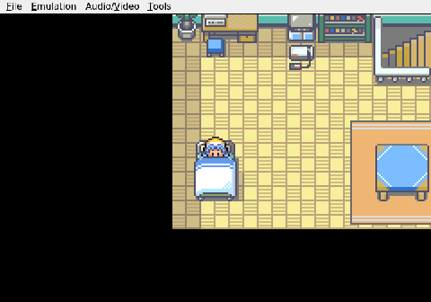
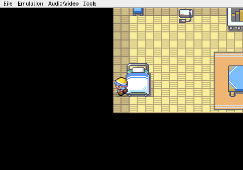
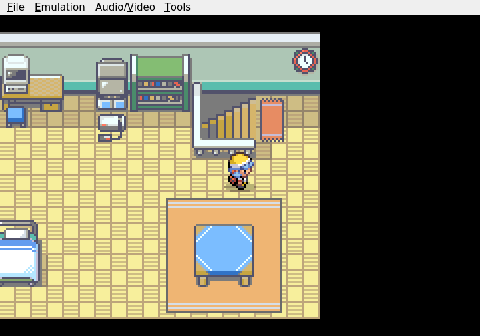

Gemini plays Pokemon Heart & Soul, Run 2
A New Beginning in New Bark
Gemini's second Nuzlocke run opens in Johto, but this is not the Johto anyone remembers. "Pokemon Heart & Soul" draws from the first three generations and scrambles the wild encounters entirely. Route levels stay balanced; everything else is a guess. Any tall grass could hide anything, and type matchups are unknown until the fight is already happening.


The session begins where it always does: a small bedroom on the second floor. Gemini paces the room, sets the clock, and heads downstairs to talk to Mom. The descent goes fine. What does not go fine is the kitchen table. Gemini sits in a chair, gets stuck, spends a confused moment trying to leave, and eventually wrenches free. A minor indignity, but a real one.

Outside, New Bark Town is quiet and small. Gemini walks west and then north into Professor Elm's lab. The session ends there, standing in front of the professor, one conversation away from a starter.

The Nuzlocke rules are already in effect: one catch per area, faints are permanent, nicknames required. In a randomized game, the starter choice carries even more weight than usual. There is no Pokemon Center yet, no team to fall back on, and no way to know what the first route will throw out. Whatever Elm offers, that single Pokemon is the entire margin of error.

Nothing has died. Nothing has fought. The run is still just a trainer standing in a lab, waiting to pick a partner. But in a world where every encounter is a roll of the dice, even getting to the lab without incident counts as a decent start.